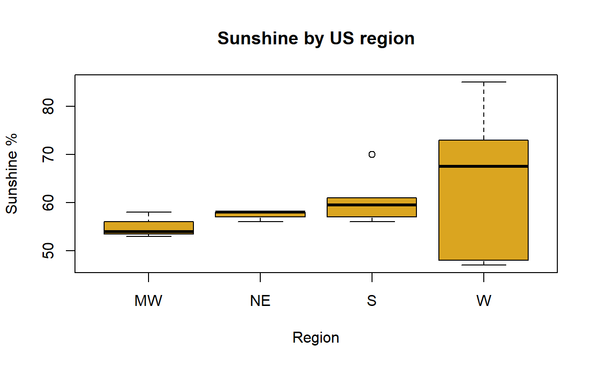

Tutorial written by Madeline Brown and modified for learnr
Loading packages and data
Installing and loading packages
R comes with basic functions, but you need to install packages in order to really maximize R’s functionality. You can install a package as follows:
install.packages("psych")Packages can also be installed by by using the “Tools” or “Install Packages” menu in RStudio.
Packages only need to be installed once, but must be loaded with each
new session of R. Let’s load the psych package. We will use
this later to produce summary statistics. Use the library()
function to load a package.
library(psych)## Warning: package 'psych' was built under R version 4.2.2Setting the working directory
The working directory is where R will automatically look to find files to load into R and where any files you create will be exported to. You can save a lot of time by setting and using a working directory.
getwd() #shows you the working directory
setwd("path")
#windows: "C:\Users\username\Desktop\filename.csv"
#mac: ""/Users/username/Desktop/filename.csv""Reading and writing data
To read in a data file, we can use the read.csv( )
function. If the data file is within your working directory, you can
simply refer to the file name. On a mac you can also right click on the
file and hold down the option key to copy the file pathname.
#CityInfo <- read.csv("pathname/CityInfo.csv")
#CityInfo<-read.csv("CityInfo.csv")CityInfo <- read.csv("https://maddiebrown.github.io/ANTH630/data/Cityinfo.csv")#write.csv(CityInfo, "CityInfo2.csv")Exploratory data analysis
Check out this new CityInfo dataframe.
CityInfoBefore we do anything else, let’s make a quick boxplot of the sunshine across regions in our dataframe.
boxplot(Sunshine_per~Region,data=CityInfo, xlab="Region",ylab="Sunshine %", main="Sunshine by US region",col="goldenrod")
Now let’s examine our dataframe. Look at the first six rows
head(CityInfo)Examine the dataframe structure
str(CityInfo)## 'data.frame': 19 obs. of 8 variables:
## $ City : chr "New York" "Los Angeles" "San Francisco" "Chicago" ...
## $ State : chr "NY" "CA" "CA" "IL" ...
## $ Region : chr "NE" "W" "W" "MW" ...
## $ Populationmetro_2016: int 20685000 15135000 5955000 9185000 2795000 2000000 6280000 5595000 4490000 3660000 ...
## $ Sunshine_per : int 58 73 66 54 58 48 61 56 58 53 ...
## $ Bikecom_per : num 1.1 1.3 4.4 1.7 4.6 7.2 0.2 1.9 2.4 0.8 ...
## $ Year : int 1625 1781 1776 1803 1867 1845 1841 1682 1630 1701 ...
## $ Sportsteam_num : int 9 8 6 5 4 1 4 4 4 4 ...And look at summary statistics for the dataframe
summary(CityInfo)## City State Region Populationmetro_2016
## Length:19 Length:19 Length:19 Min. : 925000
## Class :character Class :character Class :character 1st Qu.: 3135000
## Mode :character Mode :character Mode :character Median : 4950000
## Mean : 5809737
## 3rd Qu.: 5980000
## Max. :20685000
## Sunshine_per Bikecom_per Year Sportsteam_num
## Min. :47.00 Min. :0.200 Min. :1625 Min. :1.000
## 1st Qu.:55.00 1st Qu.:0.850 1st Qu.:1747 1st Qu.:3.000
## Median :58.00 Median :1.700 Median :1833 Median :4.000
## Mean :60.11 Mean :2.268 Mean :1792 Mean :4.053
## 3rd Qu.:63.50 3rd Qu.:3.550 3rd Qu.:1848 3rd Qu.:4.000
## Max. :85.00 Max. :7.200 Max. :1896 Max. :9.000psych::describe(CityInfo)Try it
Recalling what we learned about subsetting dataframes, try to complete the following tasks:
- Select the
Yearcolumn.
CityInfo$Year
# Or
CityInfo[,7]- Select the 5th element of the
Yearcolumn.
CityInfo$Year[5]- Select the 5th row of the
CityInfodataframe.
CityInfo[5,]- Select the 5th and 6th rows.
CityInfo[c(5,6),]Logical tests and dataframe subsetting
You can subset dataframes in numerous ways. Last week we discussed
the subset(), $, and [,]
functions. We can also use logical tests and specific functions to
subset dataframes based on conditionals.
CityInfo[CityInfo$Region == "W" & CityInfo$State == "CA", ]CityInfo[CityInfo$Region == "W" | CityInfo$State == "CA", ]CityInfo[CityInfo$Region == "W" & CityInfo$State != "CA", ]Suppose we want to subset the city names based on whether they are in
the NE and W regions. We can use %in%.
CityInfo$Region %in% c("NE", "W") # what does this return?## [1] TRUE TRUE TRUE FALSE FALSE TRUE FALSE TRUE TRUE FALSE TRUE TRUE
## [13] TRUE FALSE FALSE FALSE FALSE FALSE FALSECityInfo[CityInfo$Region %in% c("NE", "W"),"City"] # what does this return?## [1] "New York" "Los Angeles" "San Francisco" "Portland"
## [5] "Philadelphia" "Boston" "Denver" "Seattle"
## [9] "Phoenix"There are also additional functions that allow you to match subsets of dataframes based on particular values.
CityInfowhich(CityInfo$Populationmetro_2016 > 3475000) # this returns the index of the value from the vector## [1] 1 2 3 4 7 8 9 10 13 14 16 17 18CityInfo[which(CityInfo$Populationmetro_2016 > 3475000),] # this subsets the whole dataframe for only the cities with populations over 3475000.Regular Expressions
Text can be searched using a standardized lexicon called regular
expressions. Read more on
regular expressions and how to [se them]](https://r4ds.had.co.nz/strings.html#matching-patterns-with-regular-expressions)
for data science. Regular expressions are also helpful when pasting
labels or programming figure titles/captions in a standardized way (for
example, adding new lines). Here let’s use str_detect() to
pull out some strings with regular expressions.
library(tidyverse)## ── Attaching packages ─────────────────────────────────────── tidyverse 1.3.2 ──
## ✔ ggplot2 3.4.0 ✔ purrr 0.3.5
## ✔ tibble 3.1.8 ✔ dplyr 1.0.10
## ✔ tidyr 1.2.1 ✔ stringr 1.4.1
## ✔ readr 2.1.3 ✔ forcats 0.5.2## Warning: package 'ggplot2' was built under R version 4.2.2## Warning: package 'readr' was built under R version 4.2.2## Warning: package 'purrr' was built under R version 4.2.2## ── Conflicts ────────────────────────────────────────── tidyverse_conflicts() ──
## ✖ ggplot2::%+%() masks psych::%+%()
## ✖ ggplot2::alpha() masks psych::alpha()
## ✖ dplyr::filter() masks stats::filter()
## ✖ dplyr::lag() masks stats::lag()#any cities ending in "s"
CityInfo$City[str_detect(CityInfo$City,"s$")]## [1] "Los Angeles" "Minneapolis" "Dallas" "New Orleans"# which rows have a city ending in "s"
str_detect(CityInfo$City,"s$")## [1] FALSE TRUE FALSE FALSE TRUE FALSE TRUE FALSE FALSE FALSE FALSE FALSE
## [13] FALSE FALSE TRUE FALSE FALSE FALSE FALSE#any cities with a space in the name
CityInfo$City[str_detect(CityInfo$City, ". .")]## [1] "New York" "Los Angeles" "San Francisco" "New Orleans"
## [5] "Washington DC"Some basics with regular expressions:
$means the end of a string (line, e.g. whole string, not within string)^means the start of a string[]means to search for any of the included characters within that bracket at that position. Simply listing characters will lead to direct matches, while you can also create ranges and exclusions..can stand in for any character except a return (new line)\nmeans a new line|means “or”, just as in base R- Because certain characters have a meaning in regular expressions
(e.g.
.and\), you need to escape the character first in order to directly match it. See here for details. - You can look for patterns that repeat or restrict a search to only digits or letters. This can be helpful for data validation or searching for standardized strings such as zip codes, phone numbers, or names.
Try-it
- Select all city names starting with “s”.
CityInfo$City[str_detect(CityInfo$City,"^s")]
#why doesn't this work? R is case sensitive
CityInfo$City[str_detect(CityInfo$City,"^S")]- Print all city names for cities founded in the 1600s or 1700s
CityInfo$City[str_detect(CityInfo$Year,"1[6-7].")]- Print the name and year of founding for all cities with either “as” or “il” in the name.
CityInfo[str_detect(CityInfo$City,"as|il"), c("City", "Year")]Data were obtained from several sources:
Sports teams in the Big 4 (NFL, MLB, NMA, NHL) and metro population estimates
Sunniest cities in US (Using National oceanic atmmospheric administation data. Average percent of possible sunshine)